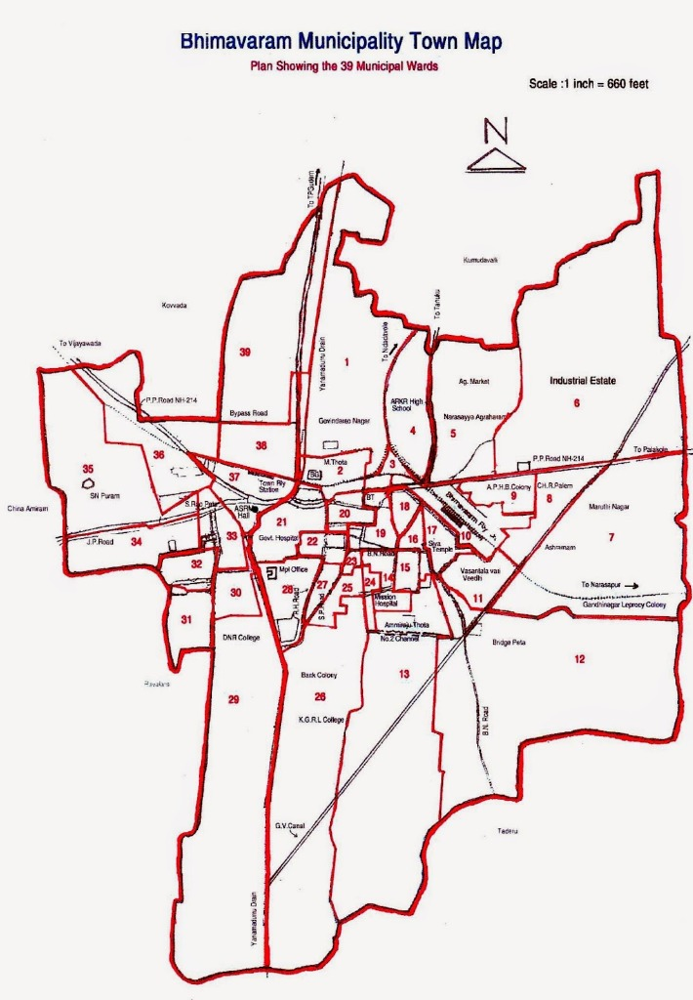

లైవ్ అలైన్మెంట్:
|
అక్షాంశం: 16.5442° N | రేఖాంశం: 81.5284° E
|
జూమ్: 14
|
స్కేల్: 1 అంగుళం = 660 అడుగులు (Town Map Plan)
↕️
వార్డు సమగ్ర వివరాల ప్యానెల్ (వర్టికల్ స్క్రోల్)
Scroll ⬇️
వార్డు 1
North Zone
గోవిందరావు నగర్ & యలమదుర్రు డ్రెయిన్ నార్త్
Govindarao Nagar & Yanamadurru Drain North
👥 అంచనా జనాభా:
3,410
🏠 నివాస గృహాలు:
890
📜
అధికారిక గెజిట్ సరిహద్దులు (Gazette Boundaries):
⬆️ ఉత్తరం (North): -
➡️ తూర్పు (East): -
⬇️ దక్షిణం (South): -
⬅️ పశ్చిమం (West): -
🛰️ R.S. నంబర్లు & డోర్ నంబర్లు:
R.S. నంబర్లు: -
డోర్ నంబర్లు: -
🏛️ ఈ వార్డులోని ప్రధాన ల్యాండ్మార్క్లు:
-
🛣️ ప్రధాన రహదారులు:
-
🌊 కాలువ / డ్రెయిన్:
-
🛰️ APSAC జలాశయాల లేయర్ (ఈ వార్డు పరిధిలో):
📜 సరిహద్దుల వివరణ:
-
📑 స్కాన్ చేసిన పటంలో వార్డు స్థానం:

1:660 Master Plan Town Survey
🏷️ మొత్తం 39 వార్డుల శీఘ్ర సూచిక:
ఎంచుకోవడానికి క్లిక్ చేయండి